OverHead Type: Manufacturing --> Configuration --> OverHead Type
The possibility of classifying OverHead items into various OverHead Types Like as(Energy ,Labour ,Miscellaneous)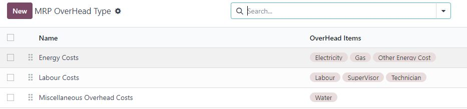
OverHead Type With Smart Buttuns
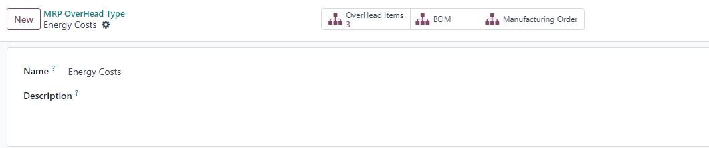
Define OverHead Items and optional to link it to Specific OverHead Type
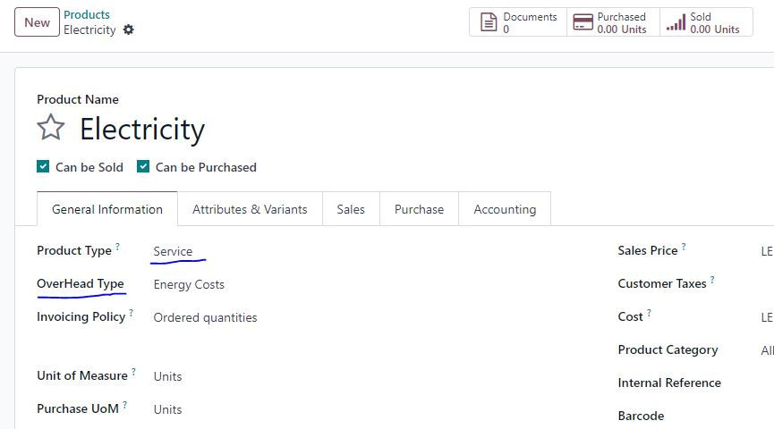
Adding OverHead Items according to the producer’s share of each item
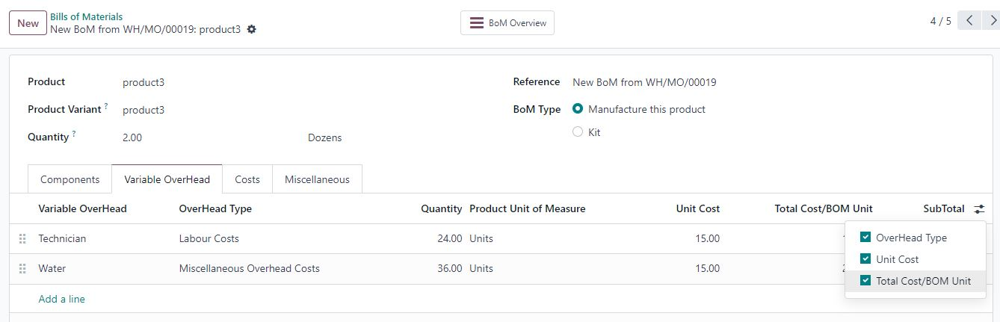
Statistical Information on the cost of Raw materials and the cost of Overhead Items on BOM
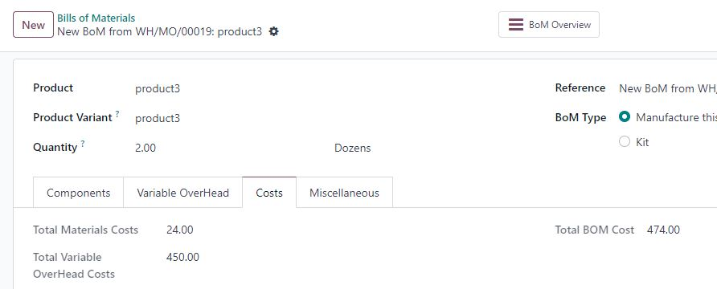
Print BoM Costs(Material And Variable OverHead) Report From BOM
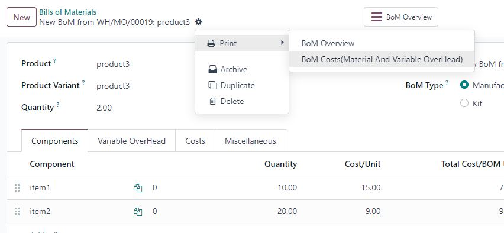
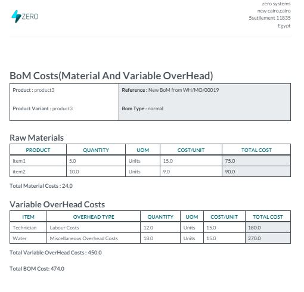
Print BoM Costs(Material And Variable OverHead) Report For Multi Select
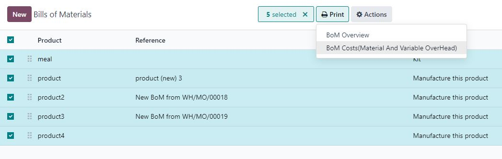
BoM Costs(Material And Variable OverHead) Analysis
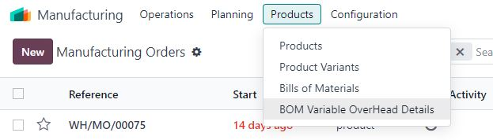
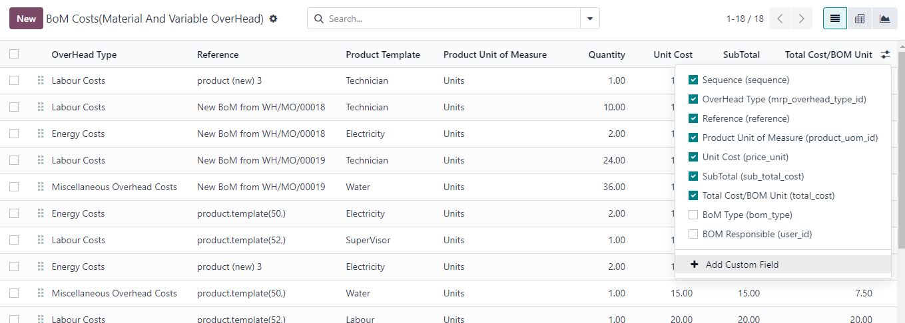
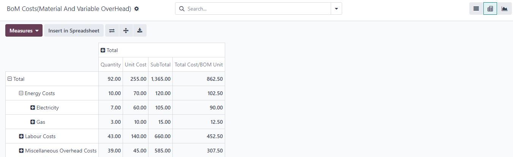
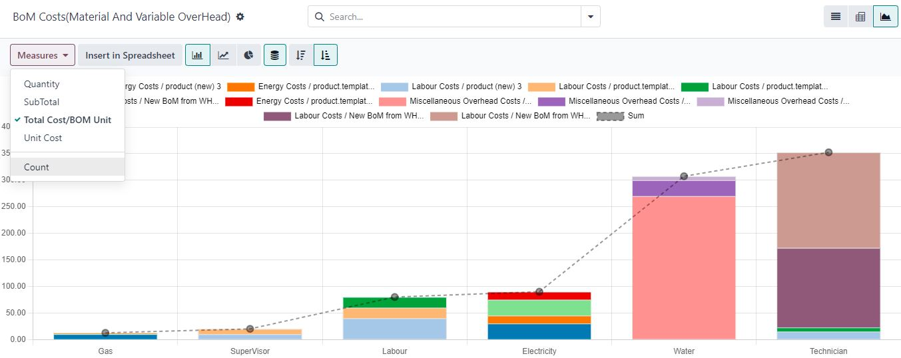
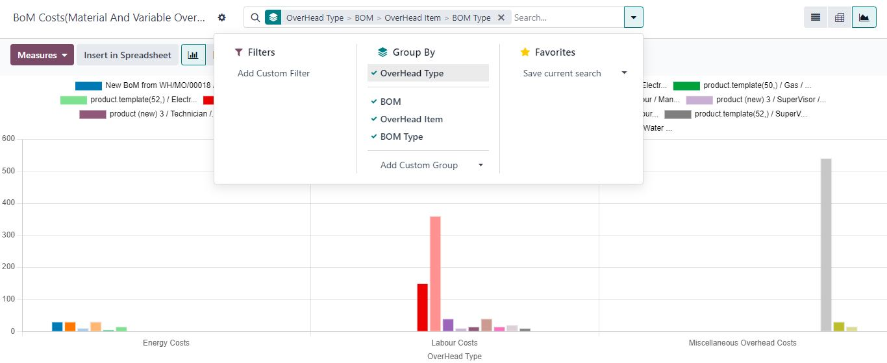
Manufacturing Order Automatic Passed Editable OverHead from BOM OR Manualey
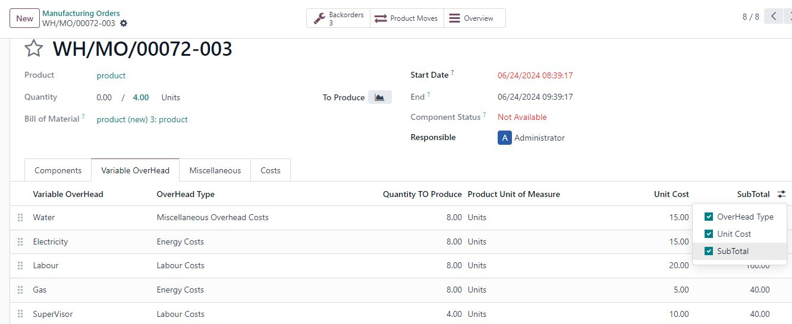
Statistical Information on the Manufacturing Order costs(Actual cost, Standard Costs to produce Quantity, Costs Deviations, Estimated Cost to Complete ,Total Actual Cost)
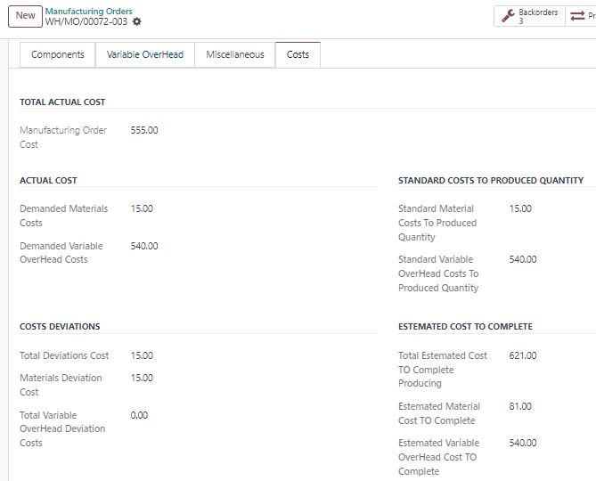
Print Different Manufacturing Order costs Reports
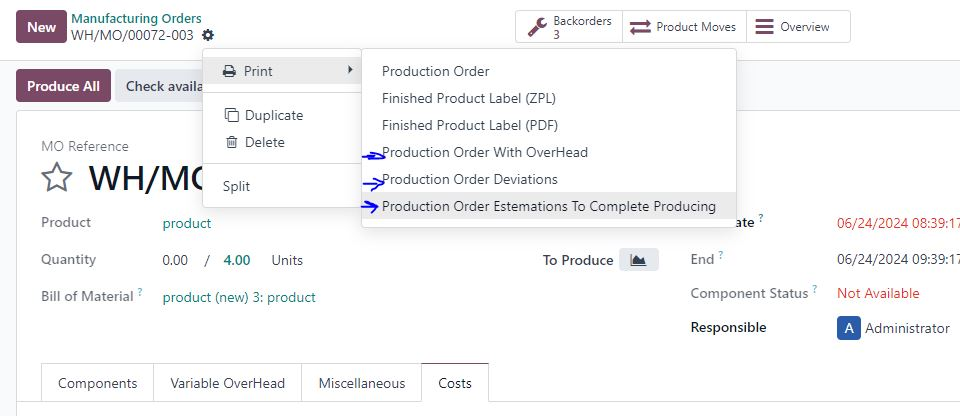
Production Order With OverHead for Quantity Producing Report
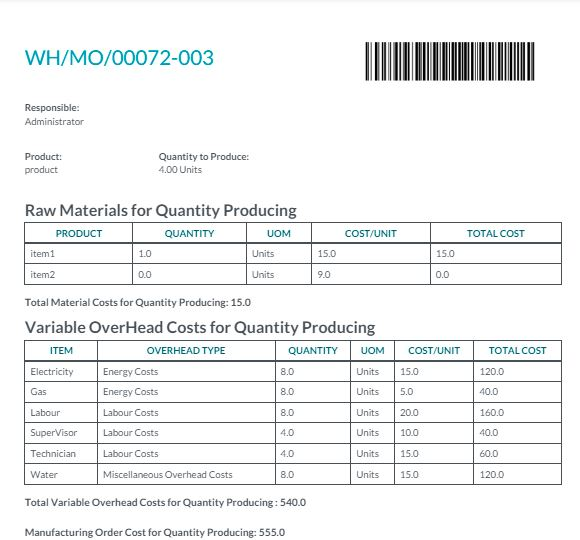
Production Order Deviations for Quantity Producing Report
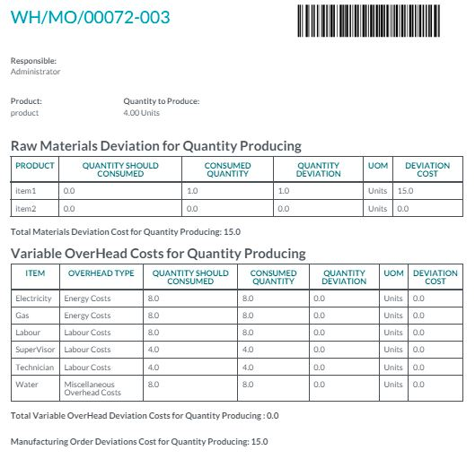
Production Order Estemations To Complete Producing Report
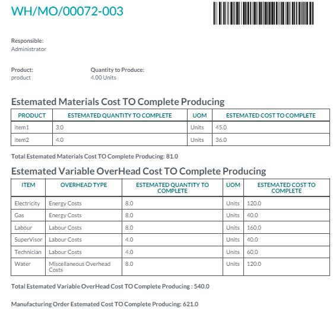
When Manufacturing Order Done then the sytems will calculate total product cost to Stock Valuation and Journal Entry as (Raw Materials + OverHead)
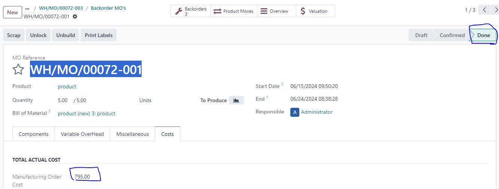
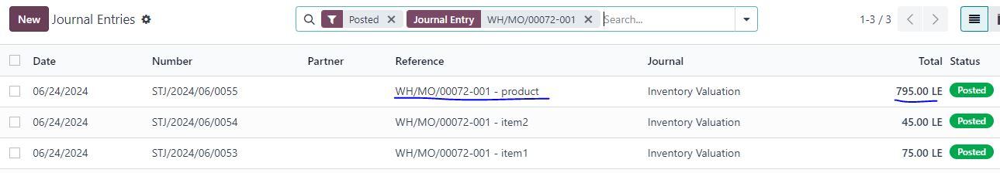
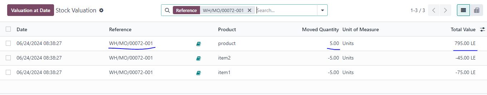
Print Manufacturing Order Costs Reports For Multi Select
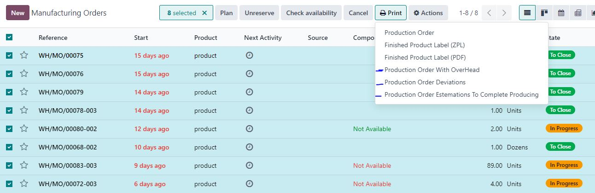
Mnufacturing Orders Variable OverHead Analysis
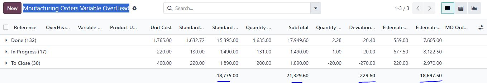
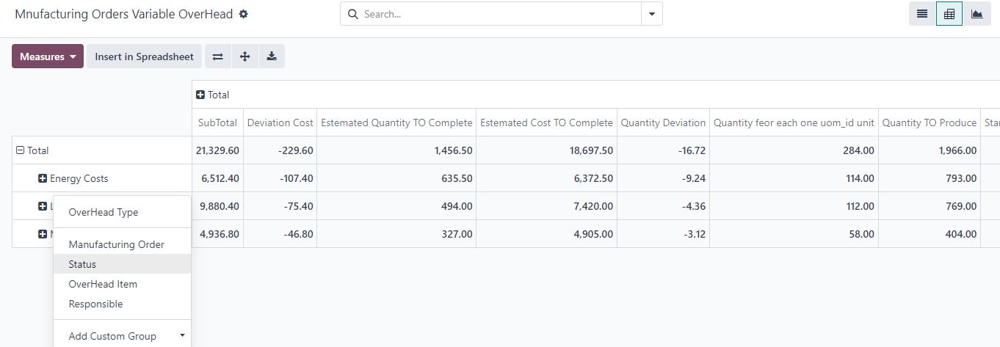
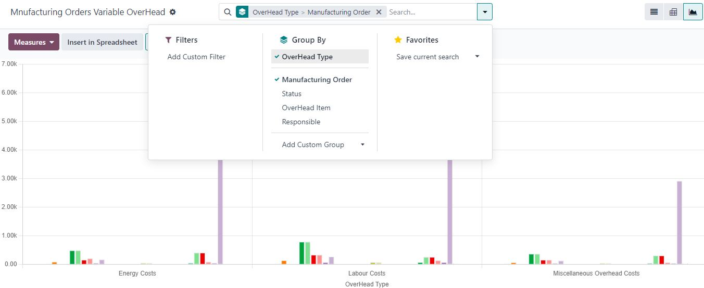
Support services will be provided from Sunday to Thursday, 10:30 AM to 6:30 PM (Cairo Time).